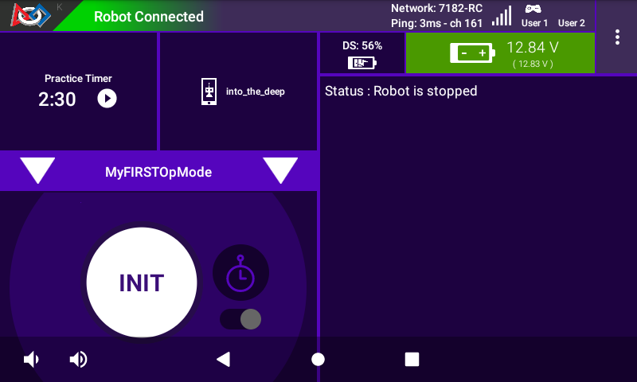
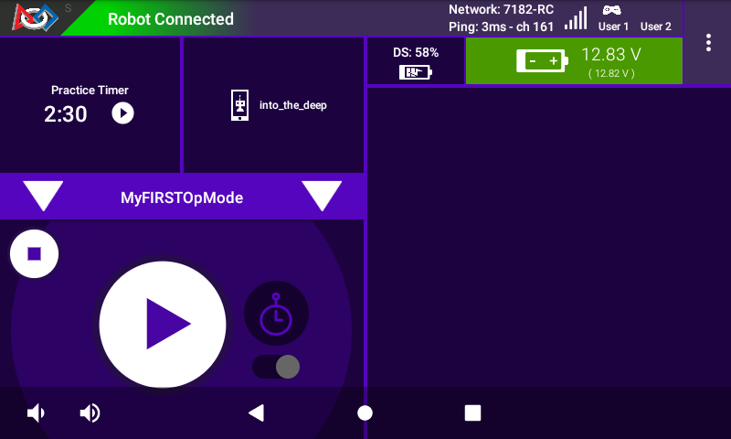

Creating and Running an OpMode AS
TeamCode Module
If you successfully imported the Android Studio project folder, you
will see on the project browser an Android module named TeamCode. The
Android Studio project folder will be used to build a version of the
Robot Controller app that includes the custom OpMode that you will
write to control your competition robot.
When you create your classes and OpModes, you will to create them in
the org.firstinspires.ftc.teamcode package that resides in the TeamCode
module. This package is reserved for your use within the Android
Studio project folder.
Javadoc Reference Information
The Javadoc reference documentation for the SDK is available online. Visit the following URL to view the SDK documentation:
Enabling Auto Import
The auto import feature of Android Studio is a convenient function that helps save time as you write your OpMode. If you would like to enable this feature, select the Editor->General->Auto Import item from the Android Studio Settings screen. This will display the editor’s auto import settings.
Check the “Add unambiguous imports on the fly” so that Android Studio will automatically add the required import statements for classes that you would like to use in your OpMode.
Sample OpModes
A great way to learn how to program a robot is to examine the sample op
modes that are included with the Android Studio project folder. You
can locate these files in the FtcRobotController module in the package
org.firstinspires.ftc.robotcontroller.external.samples.
If you would like to use a sample OpMode, copy it from the
org.firstinspires.ftc.robotcontroller.external.samples package and
move it to the org.firstinspires.ftc.teamcode package.
In your newly copied OpMode, look for the following annotation,
@Disabled
and comment out this line to enable the OpMode and allow it to be run on the Robot Controller:
//@Disabled
Creating Your First OpMode
Right mouse click on the org.firstinspires.ftc.teamcode package and
select New->Java Class from the pop-up menu. The Create New Class dialog
box appear. Specify the name of the new class as MyFIRSTJavaOpMode and
specify as its superclass the class LinearOpMode which is in the package
com.qualcomm.robotcore.eventloop.opmode.
Press the OK button to create the new class. The source code for the new class should appear in the editing pane of the Android Studio user interface.
Modify the main portion of your OpMode so that it looks like the following code (note that the package definition and some import statements have been omitted in the following source code):
@TeleOp
public class MyFIRSTJavaOpMode extends LinearOpMode {
private Gyroscope imu;
private DcMotor motorTest;
private DigitalChannel digitalTouch;
private DistanceSensor sensorColorRange;
private Servo servoTest;
@Override
public void runOpMode() {
imu = hardwareMap.get(Gyroscope.class, "imu");
motorTest = hardwareMap.get(DcMotor.class, "motorTest");
digitalTouch = hardwareMap.get(DigitalChannel.class, "digitalTouch");
sensorColorRange = hardwareMap.get(DistanceSensor.class, "sensorColorRange");
servoTest = hardwareMap.get(Servo.class, "servoTest");
telemetry.addData("Status", "Initialized");
telemetry.update();
// Wait for the game to start (driver presses PLAY)
waitForStart();
// run until the end of the match (driver presses STOP)
while (opModeIsActive()) {
telemetry.addData("Status", "Running");
telemetry.update();
}
}
}
We will use this source code as the framework for your first OpMode. Note that Android Studio automatically saves your source code as you are editing it.
Congratulations! You’ve written an OpMode. It does not do much, but we will modify it to make it more useful.
Examining the Structure of Your OpMode
It can be helpful to think of an OpMode as a list of tasks for the Robot Controller to perform. For a linear OpMode, the Robot Controller will process this list of tasks sequentially. Users can also use control loops (such as a while loop) to have the Robot Controller repeat (or iterate) certain tasks within a linear OpMode.

If you think about an OpMode as a list of instructions for the robot,
this set of instructions that you created will be executed by the robot
whenever a team member selects the OpMode called MyFIRSTJavaOpMode
from the list of available OpModes for this Robot Controller.
Let’s look at the structure of your newly created OpMode. Here’s a copy of the OpMode text (minus some comments, the package definition, and some import package statements):
@TeleOp
public class MyFIRSTJavaOpMode extends LinearOpMode {
private Gyroscope imu;
private DcMotor motorTest;
private DigitalChannel digitalTouch;
private DistanceSensor sensorColorRange;
private Servo servoTest;
@Override
public void runOpMode() {
imu = hardwareMap.get(Gyroscope.class, "imu");
motorTest = hardwareMap.get(DcMotor.class, "motorTest");
digitalTouch = hardwareMap.get(DigitalChannel.class, "digitalTouch");
sensorColorRange = hardwareMap.get(DistanceSensor.class, "sensorColorRange");
servoTest = hardwareMap.get(Servo.class, "servoTest");
telemetry.addData("Status", "Initialized");
telemetry.update();
// Wait for the game to start (driver presses PLAY)
waitForStart();
// run until the end of the match (driver presses STOP)
while (opModeIsActive()) {
telemetry.addData("Status", "Running");
telemetry.update();
}
}
}
At the start of the OpMode there is an annotation that occurs before the class definition. This annotation states that this is a tele-operated (i.e., driver controlled) OpMode:
@TeleOp
If you wanted to change this OpMode to an autonomous OpMode, you would
replace the @TeleOp with an @Autonomous annotation instead.
You can see from the sample code that an OpMode is defined as a Java
class. In this example, the OpMode name is called MyFIRSTJavaOpMode
and it inherits characteristics from the LinearOpMode class.
public class MyFIRSTJavaOpMode extends LinearOpMode {
You can also see that the OnBot Java editor created five private member variables for this OpMode. These variables will hold references to the five configured devices that the OnBot Java editor detected in the configuration file of your Robot Controller.
private Gyroscope imu;
private DcMotor motorTest;
private DigitalChannel digitalTouch;
private DistanceSensor sensorColorRange;
private Servo servoTest;
Next, there is an overridden method called runOpMode. Every OpMode of
type LinearOpMode must implement this method. This method gets called
when a user selects and runs the OpMode.
@Override
public void runOpMode() {
At the start of the runOpMode method, the OpMode uses an object named
hardwareMap to get references to the hardware devices that are listed in
the Robot Controller’s configuration file:
imu = hardwareMap.get(Gyroscope.class, "imu");
motorTest = hardwareMap.get(DcMotor.class, "motorTest");
digitalTouch = hardwareMap.get(DigitalChannel.class, "digitalTouch");
sensorColorRange = hardwareMap.get(DistanceSensor.class, "sensorColorRange");
servoTest = hardwareMap.get(Servo.class, "servoTest");
The hardwareMap object is available to use in the runOpMode method. It
is an object of type HardwareMap class.
Note that when you attempt to retrieve a reference to a specific device
in your OpMode, the name that you specify as the second argument of the
HardwareMap.get method must match the name used to define the device in
your configuration file. For example, if you created a configuration
file that had a DC motor named motorTest, then you must use this same
name (it is case sensitive) to retrieve this motor from the hardwareMap
object. If the names do not match, the OpMode will throw an exception
indicating that it cannot find the device.
In the next few statements of the example, the OpMode prompts the user
to push the start button to continue. It uses another object that is
available in the runOpMode method. This object is called telemetry and
the OpMode uses the addData method to add a message to be sent to the
Driver Station. The OpMode then calls the update method to send the
message to the Driver Station. Then it calls the waitForStart method, to
wait until the user pushes the start button on the driver station to
begin the OpMode run.
telemetry.addData("Status", "Initialized");
telemetry.update();
// Wait for the game to start (driver presses PLAY)
waitForStart();
Note that all linear OpModes should have a waitForStart statement to
ensure that the robot will not begin executing the OpMode until the
driver pushes the start button.
After a start command has been received, the OpMode enters a while loop and keeps iterating in this loop until the OpMode is no longer active (i.e., until the user pushes the stop button on the Driver Station):
// run until the end of the match (driver presses STOP)
while (opModeIsActive()) {
telemetry.addData("Status", "Running");
telemetry.update();
}
As the OpMode iterates in the while loop, it will continue to send telemetry messages with the index of “Status” and the message of “Running” to be displayed on the Driver Station.
Building and Installing Your OpMode
Verify that the Robot Controller phone is connected to your laptop and that the laptop has USB debugging permission for the phone.
Or, if you are using a Control Hub, verify that the Control Hub is powered by a freshly charged 12V battery, and that it is connected to your laptop through its USB Type C port. Note that the Control Hub should automatically have USB debugging permission enabled.

When using the Control Hub, please make sure you use the Type C port (and not the USB Mini port) to connect the Control Hub to your development laptop.
Look towards the top of the Android Studio user interface and find the
little green Play or Run button (which is represented by a green
triangle) next to the words Team Code. Press this green button to
build the Robot Controller app and to install it onto your phone.
Android Studio should prompt you to select a target device to install the Robot Controller app. Your screen might look something like the image shown below.

Make sure that you select the correct target device. In the figure above the Motorola phone is selected as the target device. Hit OK to build the APK file and install it on the target device.
Note that if you previously installed a copy of the Robot Controller app from the Google Play store, the installation of your newly built app will fail the first time you attempt to install it. This is because Android Studio detects that the app that you just build has a different digital signature than the official version of the Robot Controller app that was installed from Google Play.

If this happens, Android Studio will prompt you if it’s OK to uninstall
the previous (official) version of the app from your device and replace
it with the updated version of the app. Select OK to uninstall the
previous version and to replace it with your newly created Robot
Controller App (see image above).

If the installation was successful, the Robot Controller app should be launched on the target Android device. If you are using an Android phone as your Robot Controller, you should see the main Robot Controller app screen displayed on the phone.
Although the Control Hub lacks a built in screen, if you are Control Hub user, you can verify that the app was installed onto your Control Hub properly by looking at your Driver Station. If the Driver Station indicates that it is successfully connected to the Control Hub (after momentarily disconnecting while the update was occurring) then the app was successfully updated.
Running Your OpMode
If you successfully built and installed your updated Android app with
your new OpMode, then you are ready to run the OpMode. Verify that
the Driver Station is still connected to the Robot Controller. Since
you designated that your example OpMode is a tele-operated OpMode,
it will be listed as a TeleOp OpMode.
On the Driver Station, use the TeleOp dropdown list control to
display the list of available OpModes. Select your OpMode
(“MyFIRSTJavaOpMode”) from the list.


Press the “INIT” button to initialize the OpMode.

The OpMode will execute the statements in the runOpMode method up to the waitForStart statement. It will then wait until you press the start button (which is represented by the triangular shaped symbol) to continue.
Once you press the start button, the OpMode will continue to iterate and send the “Status: Running” message to the Driver Station. To stop the OpMode, press the square-shaped stop button.


Congratulations! You ran your first Java OpMode!
Modifying Your OpMode to Control a Motor
Let’s modify your OpMode to control the DC motor that you connected and configured for your REV Robotics Control Hub or REV Robotics Expansion Hub. Modify the code for the program loop so that it looks like the following:
// run until the end of the match (driver presses STOP)
double tgtPower = 0;
while (opModeIsActive()) {
tgtPower = -this.gamepad1.left_stick_y;
motorTest.setPower(tgtPower);
telemetry.addData("Target Power", tgtPower);
telemetry.addData("Motor Power", motorTest.getPower());
telemetry.addData("Status", "Running");
telemetry.update();
}
If you look at the code that was added, you will see that we defined a new variable called target power before we enter the while loop.
double tgtPower = 0;
At the start of the while loop we set the variable tgtPower equal to the negative value of the gamepad1’s left joystick:
tgtPower = -this.gamepad1.left_stick_y;
The object gamepad1 is available for you to access in the runOpMode
method. It represents the state of gamepad #1 on your Driver Station.
Note that for the F310 gamepads that are used during the competition,
the Y value of a joystick ranges from -1, when a joystick is in its
topmost position, to +1, when a joystick is in its bottommost position.
In the example code above, you negate the left_stick_y value so that
pushing the left joystick forward will result in a positive power being
applied to the motor. Note that in this example, the notion of forwards
and backwards for the motor is arbitrary. However, the concept of
negating the joystick y value can be very useful in practice.

The next set of statements sets the power of motorTest to the value represented by the variable tgtPower. The values for target power and actual motor power are then added to the set of data that will be sent via the telemetry mechanism to the Driver Station.
tgtPower = -this.gamepad1.left_stick_y;
motorTest.setPower(tgtPower);
telemetry.addData("Target Power", tgtPower);
telemetry.addData("Motor Power", motorTest.getPower());
After you have modified your OpMode to include these new statements, press the build button and verify that the OpMode was built successfully.
Running Your OpMode with a Gamepad Connected
Your OpMode takes input from a gamepad and uses this input to control a DC motor. To run your OpMode, you will need to connect a Logitech F310 or other approved gamepad to the Driver Station.
Connect the gamepad to the Driver Station. If using a REV Robotics Driver Hub, you can directly connect the gamepad to one of the USB-A ports. On a DRIVER STATION phone, you will need a Micro USB OTG adapter cable.


Your example OpMode is looking for input from the gamepad designated as the user or driver #1. Press the Start button and the A button simultaneously on the Logitech F310 controller to designate your gamepad as user #1. Note that pushing the Start button and the B button simultaneously would designate the gamepad as user #2. On a PS4-style gamepad, use the Options button and Cross for user #1, or Options and Circle for user #2.

If you successfully designated the gamepad to be user #1, you should see a little gamepad icon above the text “User 1” in the upper right hand corner of the Driver Station Screen. Whenever there is activity on gamepad #1, the little icon should be highlighted in green. If the icon is missing or if it does not highlight in green when you use your gamepad, then there is a problem with the connection to the gamepad.
Select, initialize and run your MyFIRSTJavaOpMode OpMode.
If you configured your gamepad properly, then the left joystick should control the motion of the motor. As you run your OpMode, be careful and make sure you do not get anything caught in the turning motor. Note that the User #1 gamepad icon should highlight green each time you move the joystick. Also note that the target power and actual motor power values should be displayed in the telemetry area on the Driver Station.